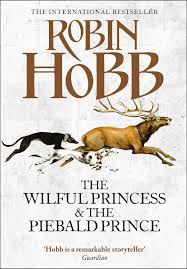
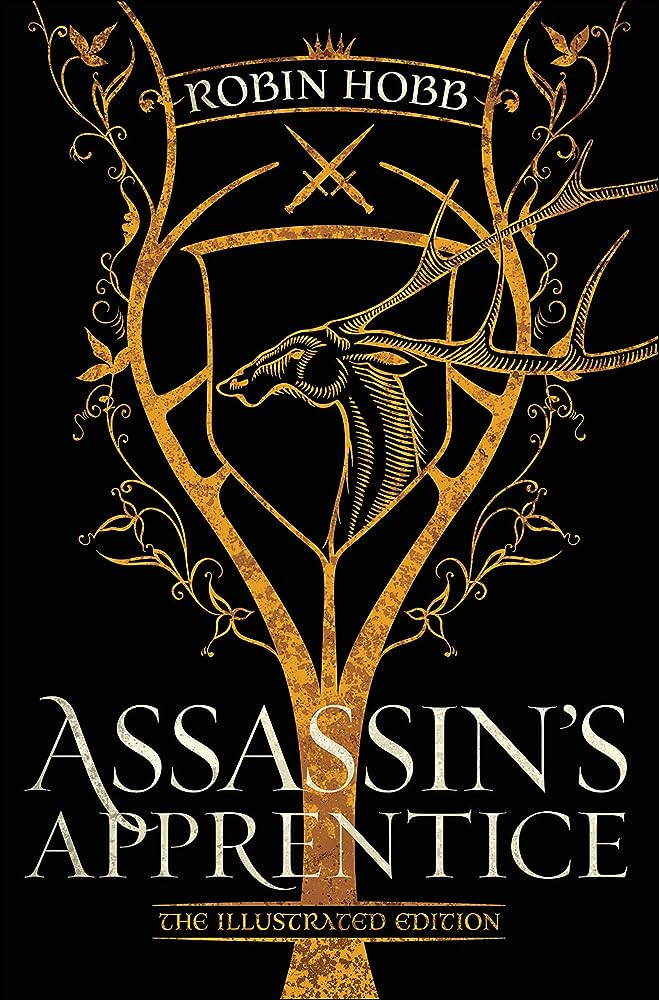

A pseudonym used by Megan Lindholm

A pseudonym used by Megan Lindholm
The Farseer novels mark the debut of Robin Hobb, a pen name of American author Margaret Astrid Lindholm Ogden. Previously, she wrote under the name Megan Lindholm, exploring urban fantasy and science fiction genres to critical acclaim, earning Hugo and Nebula Award nominations for her short fiction. In 1995, she transitioned to writing captivating secondary-world fantasy under the new pen name, Robin Hobb. The name was chosen to match the Fitz novels, narrated in a first-person male voice, exploring the theme of addictive and destructive magic.
The Farseer Trilogy by Robin Hobb is a classic series of epic fantasy novels that follows the life and adventures of its protagonist, FitzChivalry Farseer, in the fictional realm known as the Six Duchies. The trilogy is renowned for its intricate world-building and character development.
The Tawny Man Trilogy by Robin Hobb is a captivating continuation of the Farseer Saga, following FitzChivalry Farseer's return from self-imposed exile. As he reunites with old friends and faces new challenges, the trilogy delves deep into themes of loyalty, aging, and the enduring bonds between characters. It's a masterfully crafted tale of both personal and political intrigue set in a richly detailed fantasy world.

The Rain Wild Chronicles by Robin Hobb is an enthralling exploration of a lesser-known corner of her Elderlings world. This four-book series follows a diverse group of characters as they embark on a perilous journey along the treacherous Rain Wild River. With themes of transformation, discovery, and the interplay between humans and dragons, it weaves a compelling narrative filled with richly imagined settings and engaging character development.
The Inheritance is a collection of short stories written by Robin Hobb and her other pen name, Megan Lindholm. It contains several short stories set in the Realm of the Elderlings.
The Wilful Princess and the Piebald Prince is a great novella that provided a great insight into the history of Farseer and The Wit.
A gorgeously illustrated anniversary edition of the book that launched the epic Farseer Trilogy, praised by George RR Martin as “fantasy as it ought to be written” and Lin-Manuel Miranda as “an incredible series,”.